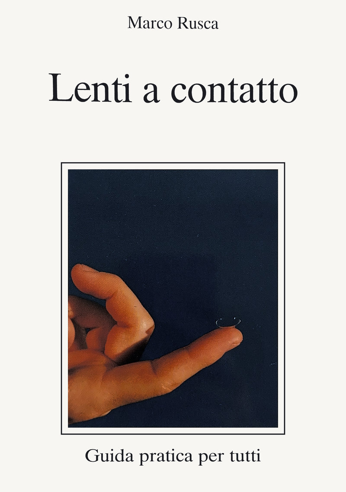
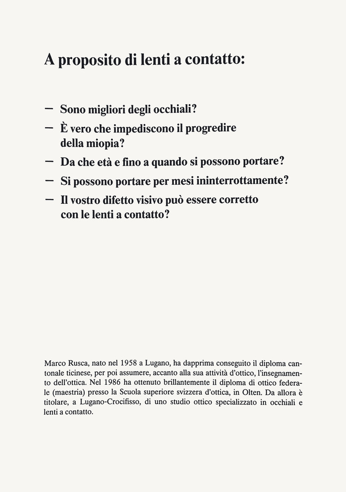

Panto
Il classico che ringiovanisce il viso. Lente alta: la scelta più comoda per le progressive.
Marco Rusca, ottico diplomato federale (maestro ottico), mette oltre quarant’anni di pratica al servizio di una cosa sola: la vista di chi si affida a lui. Una persona alla volta, con il tempo che una misurazione seria richiede.
anni di praticaUna persona alla volta, su appuntamento, con il tempo che serve.
Qui non troverà scaffali di montature da provare in fretta, né il cartello con l’offerta del mese. Troverà uno studio che considera la vista una cosa troppo seria per essere trattata di corsa.
La differenza tra un occhiale qualunque e un occhiale giusto non sta nella montatura. Sta nella precisione con cui la vista è stata misurata, nella scelta delle lenti in base a come vengono usate davvero, e nella cura con cui sono state centrate, montate e regolate. È un lavoro da ottico. Qui lo fa un maestro ottico, personalmente, dall’inizio alla fine.
Trascini il cursore. A sinistra, come si vede con una correzione approssimativa; a destra, con una correzione misurata come si deve. Fino all’ultima riga.
La tavola è una semplificazione. In studio la misura si fa con la strumentazione e il tempo che servono, non con un cursore.
Ogni visita segue lo stesso percorso, che si tratti di un primo paio di occhiali, di una correzione complessa o di lenti a contatto.
Prima di qualsiasi misura, una conversazione: come usa gli occhi durante la giornata, a che distanza lavora, quanto tempo passa davanti a uno schermo, se guida di notte, se ha già portato lenti progressive o lenti a contatto. La correzione giusta dipende da queste risposte, e da altre ancora.
Una refrazione completa, non un test rapido. Si misura tutto ciò che serve a definire la correzione esatta, con la calma necessaria per non lasciare nulla all’approssimazione. Come si svolge l’esame della vista
Le lenti si scelgono in base alla correzione e all’uso reale; la montatura in base al viso e alla correzione che dovrà portare. È la regola opposta a quella di molti negozi: prima la vista, poi l’estetica. Fatte nell’ordine giusto, le due cose vanno d’accordo.
Il maestro ottico esegue personalmente centratura, montaggio e regolazione finale. Un’ottima lente montata con qualche millimetro di errore smette di essere un’ottima lente.
Dopo alcune settimane si verifica che l’adattamento sia completo e che tutto funzioni come previsto. Per le lenti a contatto i controlli fanno parte dell’applicazione e vengono programmati fin dall’inizio.
Ogni montatura impone dei vincoli alle lenti: dimensione, curvatura, distanza dagli occhi. Con una correzione forte, una lente grande diventa spessa e pesante; con una progressiva, un’altezza insufficiente compromette la zona di lettura. Per questo qui la montatura si sceglie insieme all’ottico, dopo l’esame e non prima.
Il classico che ringiovanisce il viso. Lente alta: la scelta più comoda per le progressive.
Leggera e discreta. Con correzioni elevate il diametro va valutato con attenzione, prima di ordinare le lenti.
Struttura e carattere. Con una lente bassa servono progressive di ultima generazione, calcolate sulla montatura scelta.
Quasi invisibile, pesa pochi grammi. Per chi porta gli occhiali dodici ore al giorno e vuole dimenticarli.
Le montature in studio sono una selezione, non un catalogo: si provano con calma, con la correzione già definita, e si regolano sul viso prima di ordinare le lenti.
Ci sono ottici che vendono occhiali e ottici che si occupano di vista. Marco Rusca appartiene alla seconda categoria da oltre quarant’anni.
Nato a Lugano, ha conseguito prima il diploma cantonale ticinese e poi, nel 1986, il diploma federale di ottico (maestria) alla Scuola superiore svizzera d’ottica di Olten. Da allora è titolare del proprio studio a Lugano-Crocifisso. Per anni ha affiancato alla pratica l’insegnamento dell’ottica al Centro Professionale Tecnico: chi insegna una professione la conosce fino in fondo.
Lo studio nasce da una convinzione semplice, maturata in decenni di pratica: la vista si misura con pazienza e si corregge con precisione, e nessuna delle due cose si fa bene di fretta.


Marco Rusca è l’autore di Lenti a contatto. Guida pratica per tutti: una guida scritta per rispondere con chiarezza, e con parole semplici, alle domande di chi porta le lenti a contatto o pensa di cominciare.
Dalla quarta di copertina
Sono domande che non hanno una risposta valida per tutti. Per questo, in studio, la risposta arriva dopo l’esame dei suoi occhi e una prova delle lenti.
Occhiali e lenti a contatto sono le due specializzazioni dello studio. In entrambi i casi l’obiettivo è lo stesso: una correzione esatta, portata con comfort, che duri nel tempo.
Lenti monofocali, progressive e da lavoro, calcolate sui suoi parametri e sull’uso che ne farà. Montature scelte per la correzione che devono portare, oltre che per il viso. Regolazioni e piccole riparazioni curate nello studio.
Lenti progressive: come si scelgonoApplicazione di lenti a contatto dalla prima prova ai controlli periodici. Ogni lente viene scelta e adattata all’occhio che la porta, con l’istruzione necessaria per usarla bene e in sicurezza.
Lenti a contatto: come avviene l’applicazioneAstigmatismi elevati, differenze marcate tra i due occhi, presbiopie complesse, difficoltà di adattamento alle lenti progressive: i casi in cui l’esperienza fa la differenza, e che uno studio su appuntamento può seguire con il tempo necessario.
Se non ci si abitua alle progressiveQuesto studio è per chi porta gli occhiali dalla mattina alla sera e non si accontenta di vedere «abbastanza bene». Per chi ha una correzione difficile. Per chi ha già provato altrove senza trovarsi bene. Per chi preferisce affidarsi a una persona, non a un’insegna.
Non è lo studio adatto a chi cerca l’occhiale più economico o la promozione del momento: per quello esistono catene ben organizzate. Qui si viene per un’altra ragione.
L’oculista è un medico: diagnostica e cura le malattie dell’occhio. L’ottico realizza occhiali e lenti a contatto; l’optometrista è l’ottico con formazione superiore, specializzato nell’esame della vista. Per misurare la vista ci si può rivolgere direttamente a un ottico diplomato federale; se emergono segni che richiedono un accertamento medico, lo studio indirizza all’oculista.
È il diploma federale superiore della professione di ottico in Svizzera. Oltre alla formazione di base comprende l’esame della vista e l’applicazione di lenti a contatto. Marco Rusca lo ha conseguito nel 1986 alla Scuola superiore svizzera d’ottica di Olten ed esercita la professione da oltre quarant’anni.
In assenza di disturbi, ogni due anni circa. Prima, se nota cambiamenti: fatica a leggere, mal di testa, difficoltà alla guida di sera, stanchezza davanti allo schermo.
Le cause più frequenti sono tre: una correzione non del tutto esatta, una centratura imprecisa, una lente o una montatura non adatte all’uso reale. Conviene far verificare misure e montaggio prima di rinunciare. Lenti progressive: da cosa dipende il risultato
A Savosa, in Via Emilio Maraini 27, zona Crocifisso, alle porte di Lugano. Lo studio riceve solo su appuntamento: per telefono allo 091 966 32 68 oppure con il modulo qui sotto.
Lo studio ottico Rusca si trova a Savosa, in zona Crocifisso, alle porte di Lugano. Riceve su appuntamento chi arriva da Lugano, dal Luganese e dal resto del Ticino. Indicazioni stradali
Il modo più semplice è una telefonata. In alternativa, lasci i suoi recapiti: riceverà una chiamata per concordare data e ora.